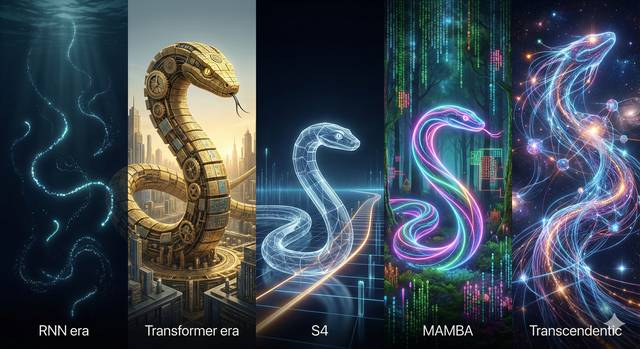

MAMBA - 포스트 트랜스포머 시대의 도래

제1부: 시퀀스 모델링의 한계와 새로운 패러다임
제1장 트랜스포머 아키텍처의 구조적 병목
제2장 상태 공간 모델(SSM)의 재발견
제2부: MAMBA 아키텍처의 기술적 혁신 (Mamba-1)
제3장 선택적 상태 공간(Selective SSM)
제4장 Mamba 시스템 구현
제3부: 이론적 완성가 확장 (Mamba-2 & Variants)
제5장 Mamba-2와 구조적 상태 공간 쌍대성(SSD)
제6장 도메인 특화 아키텍처
- [Vision] Vision Mamba (Vim) & VSSD - 시각적 상태 공간 쌍대성과 양방향 처리
- [Video] VideoMamba & Dual Branch - 시공간 모델링과 게이트 클래스 토큰 퓨전(GCTF)